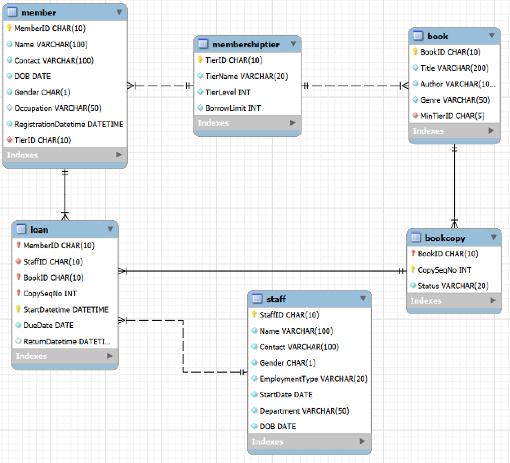
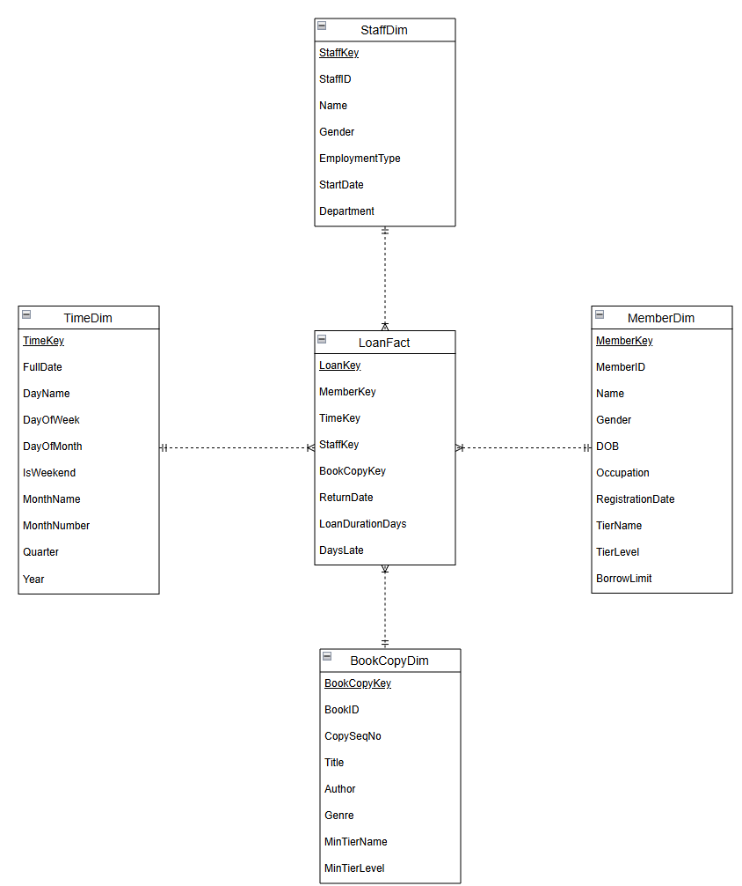
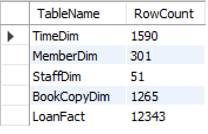
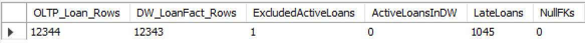
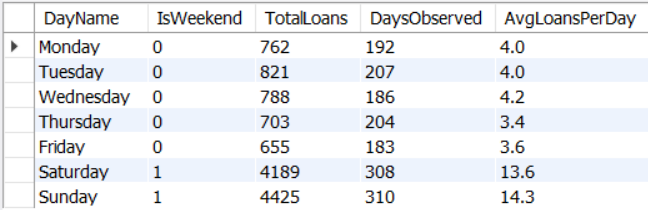
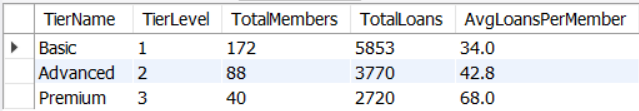
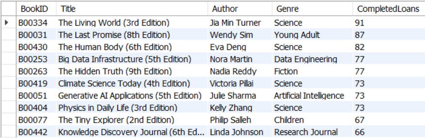
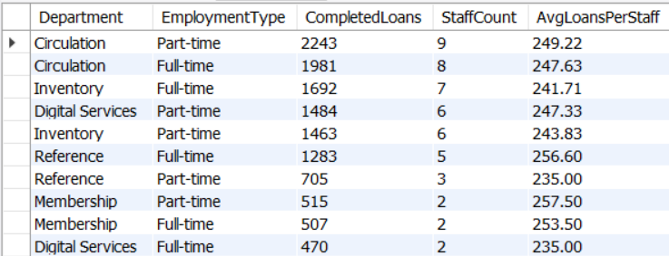
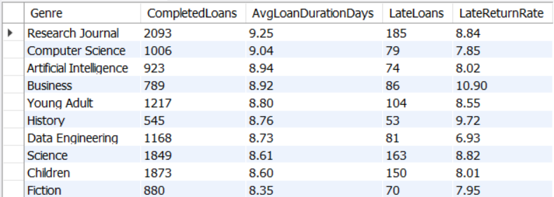
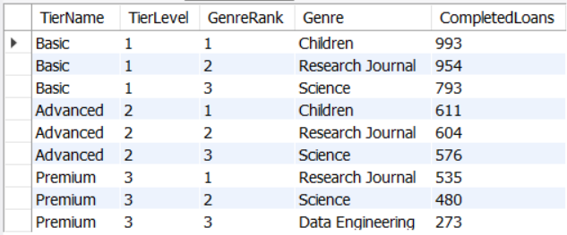

01
Overview
This Singapore Polytechnic group project took a library’s day-to-day records and turned them into a data warehouse built for analysis.
As a team of three, we cleaned the source data, loaded it into an OLTP database, designed a star-schema data warehouse, moved the loan data across with an ETL process, and then used SQL to answer six business questions about how the library is used.
02
Problem Statement
Operational databases are designed to record transactions reliably, one at a time. That structure is not well suited to broader questions such as when borrowing peaks, which members borrow most, or where late returns are concentrated.
The aim was to restructure the library’s records so these questions could be answered clearly and consistently, in support of staffing, collection and membership decisions.
03
Data Sources
The source data came as an Excel workbook (with worksheets for members, book copies and loans, among others) and a CSV file of staff records. After cleaning, it was loaded into six OLTP tables: Member, MembershipTier, Book, BookCopy, Loan and Staff.

04
Data Quality Checks
Before anything was loaded, we went through the source files looking for inconsistencies and invalid values. These are some of the issues we found and how each was fixed:
| Where | Problem found | Fix applied |
|---|---|---|
| Members | Date of birth stored as an Excel serial number (33001) instead of a date | Converted to 1990-05-08 to match the other rows |
| Members | A tier ID (T00001) that does not exist in the membership tier table | Corrected to T0001 |
| Members & Staff | Gender stored as “Male” / “Female” but the target column is a single character | Converted to M / F |
| Book copies | Status misspelled as “Availble” in four rows | Replaced with “Available” |
| Book copies | A copy marked Available while a loan with no return date showed it was still out | Changed the status to On Loan |
| Loans | One row with a non-existent staff ID, a non-existent book copy and a due date before the loan date | Deleted, as the intended values could not be reliably determined |
| Loans | Six “Returned” values shifted into the wrong column | Moved back into the loan status column |
| Loans | A summary table sitting inside the worksheet | Excluded from the insert |
| Staff | One start date in a different format (2/18/2011 13:55) | Converted to the standard date format |
05
Database Design
The warehouse uses a star schema with LoanFact at the centre and four dimensions: TimeDim, MemberDim, StaffDim and BookCopyDim. These were chosen because the planned analyses compare completed loans by time period, membership tier, staff group, book title and genre.

Design decisions
- Grain: one row in LoanFact per completed loan, involving one member, one staff member and one specific book copy.
- Measures: LoanDurationDays and DaysLate, with the return date stored to support completed-loan analysis.
- Surrogate keys in every dimension give the warehouse stable identifiers, while the original OLTP IDs are kept for reference during ETL and validation.
- Denormalised dimensions: membership-tier details sit directly in MemberDim, and book, copy and minimum-tier details are combined in BookCopyDim, which reduces the joins needed for analysis.
- BookCopyDim is at copy level because each loan refers to a specific copy of a book.
06
ETL Workflow
SQL statements extracted the data from the OLTP tables, reshaped it to fit the star schema, and loaded it into the warehouse.
- 01 · EXTRACTRead from OLTP12,344 loan records and their related members, staff and book copies.
- 02 · TRANSFORMReshape for analysisDimensions denormalised; loan duration and days late calculated.
- 03 · LOADFill the warehouse12,343 completed loans loaded into LoanFact.
Only completed loans were loaded. One loan was still active and had no return date, so its duration and lateness could not yet be calculated; it was left out. A dummy “SuperAdmin” membership tier, which was not assigned to any real member or book, was also excluded.
Checking the load
We verified the ETL with data, not by assumption:
- Row counts: TimeDim 1,590 · MemberDim 301 · StaffDim 51 · BookCopyDim 1,265 · LoanFact 12,343. The member, staff and book-copy counts matched the cleaned OLTP tables.
- Completed loans only: 12,344 OLTP loans minus the one active loan gives 12,343 fact rows, with zero active loans in the warehouse.
- No broken links: zero fact rows with a missing foreign key.


assets/images/projects/ and replace this box with: <figure class="cs-figure"><div class="cs-figure__frame"><img src="../assets/images/projects/FILE.png" alt="DESCRIBE THE IMAGE" loading="lazy"></div><figcaption>CAPTION</figcaption></figure>07
SQL Analysis
With the warehouse in place, we wrote six analyses against the star schema. Each started from a question the library might ask.
1. Are loans higher on weekends than weekdays?
Weekends averaged about 13.6 to 14.3 loans per day, compared with about 3.4 to 4.2 on weekdays — roughly three to four times higher.

What it suggests: Members borrow far more on weekends, even after allowing for there being more weekdays. The library could schedule more staff on weekends and use weekday promotions to even out demand.
2. Do higher membership tiers borrow more?
Premium members averaged 68 books each, Advanced members 42.8 and Basic members 34 — Premium members borrowed twice as many per person as Basic members.

What it suggests: Borrowing rises with tier, although this does not show whether higher limits cause more borrowing or whether keen borrowers choose higher tiers. It could help identify active members for tier-upgrade offers.
3. Which ten books were borrowed most?
The most-borrowed title had 91 completed loans, followed by titles with 87 and 82. Science appeared most often in the top ten, alongside data engineering, fiction, AI and children’s titles.

What it suggests: Demand is strong for both educational and recreational books. The library could buy extra copies of popular titles and watch them for wear.
4. Which staff groups handled the most loans?
Part-time Circulation staff handled the highest total (2,243 completed loans), but part-time Membership staff had the highest workload per person (257.5 loans each).

What it suggests: Total volume and workload per person tell different stories. Smaller teams carried heavier individual loads, so staffing plans should look at both.
5. Which genres are kept longest and returned late most often?
Research Journal had the longest average loan (9.25 days). Business had the highest late-return rate (10.90%), followed by History (9.72%).

What it suggests: The genre kept longest was not the one returned late most often. Reminders could target Business and History loans, while Research Journal availability is worth monitoring.
6. What are the top three genres for each membership tier?
Basic and Advanced members shared the same top three: Children, Research Journal and Science. For Premium members it was Research Journal, Science and Data Engineering.

What it suggests: Premium members lean towards more specialised, technical material. This could guide recommendations and stock levels for each tier.
08
Results
- Cleaned two source files and loaded six OLTP tables.
- Designed a star-schema warehouse with one fact table and four dimensions.
- Loaded 12,343 completed loans through ETL, and verified the load with row-count, completeness and foreign-key checks.
- Answered six business questions in SQL, covering borrowing patterns, membership tiers, popular titles, staff workload, late returns and genre preferences.
The dataset was provided for coursework, so the findings describe that dataset and illustrate the method. They are not results from a real library.
09
Team & My Role
This was a group project by a team of three, and the results above reflect the work of the whole team. I collaborated on the data cleaning, the warehouse design, the ETL process and the SQL analysis.
10
Key Learnings
- Start from the questions. Knowing what the library wanted to find out made it much clearer what belonged in the fact table and what belonged in a dimension.
- Most of ETL is data quality. Getting the data clean and consistent took more care than moving it.
- Verify with data. Row counts and foreign-key checks gave real confidence that the load was complete.